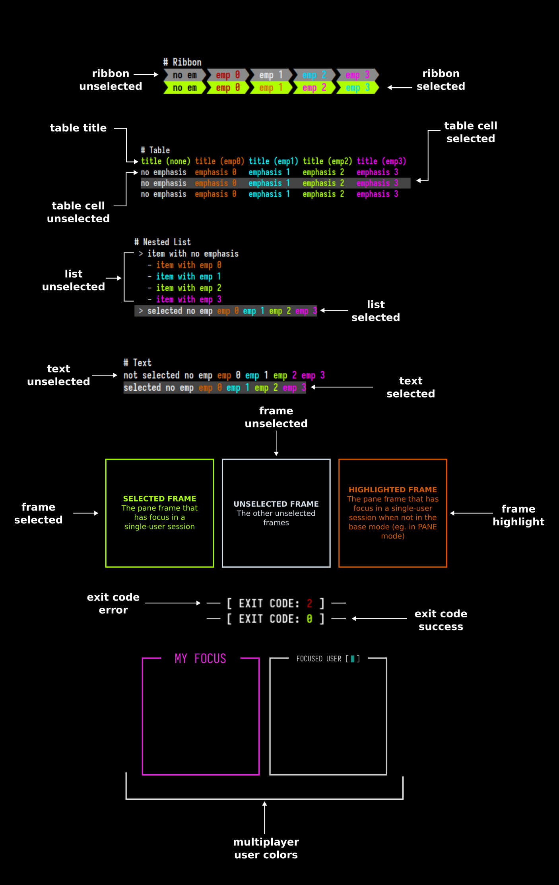

Themes
Using the built-in themes
The built-in themes in Zellij can be used by setting the theme [THEME_NAME] in the configuration file. Take a look at the list of themes to see what's possible.
Theme Definition Specification
Themes in Zellij are defined according to UI components. These components are used in the various plugins that make up the Zellij interface, and can also be used dynamically in user plugins.

Structure of a theme definition
A theme definition is a KDL file (or part of one) defined as so:
themes { // a node named "themes"
dracula { // a nested node inside the "themes" node indicating the theme name
// a list of nodes defining the UI components
ribbon_unselected {
base 0 0 0
background 255 153 0
emphasis_0 255 53 94
emphasis_1 255 255 255
emphasis_2 0 217 227
emphasis_3 255 0 255
}
// ...
}
}
It can either be placed directly in the main configuration file or in a separate directory.
Theme UI Components
Components have the following attributes, each one including a space separated list of three numbers representing the RGB color.
base- the base color of the componentbackground- the background color of the componentemphasis_0,emphasis_1,emphases_2,emphasis_3- the color of text emphases inside the text. These are used either to differentiate whole text components one from another (with each having a full color of one of the emphases), or even combined in a single component (eg. when indicating indices in fuzzy find results). Not all of these are used in the base UI, but they might be used in user plugins.
Following is the list of available component specifications:
text_unselected
This component refers to the bare text parts of the Zellij UI (for example, the Ctrl or Alt modifier indications in the status-bar).
text_selected
This component refers to the bare text parts of the Zellij UI when they need to indicate selection (eg. when paging through search results). This is often done by providing them a different color background than their unselected counterparts.
ribbon_unselected
Ribbons are used often in the Zellij UI, examples are the tabs and the keybinding modes in the status bar.
ribbon_selected
Selected ribbons are often indicated with a different color than their unselected counterparts (eg. the focused tab, or the active keybinding mode in the status bar).
table_title
The table UI component has a different style applied to its title line than the rest of the table. This is what differentiates this line.
table_cell_unselected
The style of an unselected cell in a table. Cells can be specified as selected or unselected individually, but it is often the case that a full table line is specified to have selected or unselected cells.
table_cell_selected
Often differentiated from its unselected counterpart by changing its background color.
list_unselected
A line item in a nested list, it can be arbitrarily indented. Its indentation indication is not included in the item specification.
list_selected
Often differentiated from its unselected counterpart with a different background color.
frame_selected
The frame around the focused pane.
frame_highlight
This is the frame around the focused pane when the user enters a mode other than the base mode (eg. PANE or TAB mode).
exit_code_success
The color of the exit code indication (here, only the base part of the specification is used, the rest are reserved for future use). These can be seen in command panes (eg. when using zellij run) after the command exited successfully.
exit_code_error
The color of the exit code indication (here, only the base part of the specification is used, the rest are reserved for future use). These can be seen in command panes (eg. when using zellij run) after the command exited with an error.
multiplayer_user_colors
This is the only theme section that is different from the rest of the UI components and is defined thus:
multiplayer_user_colors {
player_1 255 0 255
player_2 0 217 227
player_3 0
player_4 255 230 0
player_5 0 229 229
player_6 0
player_7 255 53 94
player_8 0
player_9 0
player_10 0
}
Each player represents the color given to a user joining (attaching) to an active session. These colors appear the same to all users and are given by order of attaching.
Getting Zellij to pick up the theme
While developing and iterating over a theme, the easiest way would be to define it directly in the main configuration file (add the themes block defined above with your theme) and then set the:
theme "your_theme_name"
directive above or below it. This way, Zellij will pick up on any changes to the theme in real time and you will not have to restart the session to see your changes.
Otherwise, it's possible to define themes in separate files under the themes folder located in CONFIG_DIR/themes. You can find the exact location of this folder with zellij setup --check.
Themes can also be loaded from the command line when starting Zellij:
zellij options --theme [NAME]
Example Themes
Here are some example themes these are the themes that come built-in with Zellij and can be freely used for inspiration and to kick off your own theme definition.
Example Plugin with all UI components
While developing a theme, it might be helpful to load the following plugin: https://github.com/imsnif/theme-tester
This will display all UI components and all their permutations, allowing you to see how your changes affect them in real time.